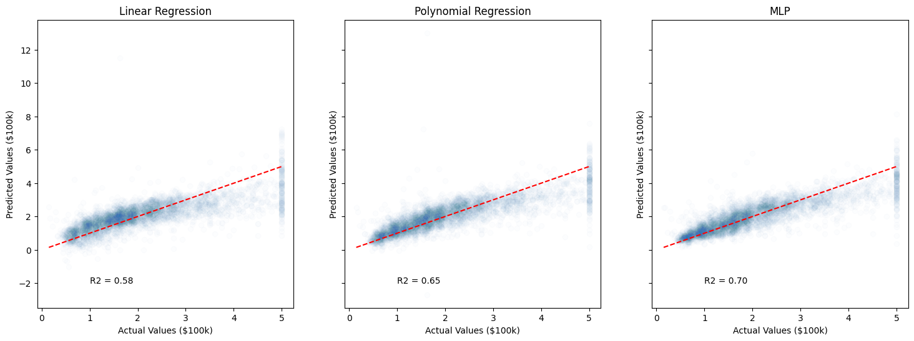
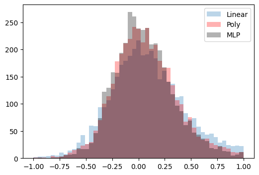

<!DOCTYPE html>


<html lang="en" data-content_root="../" >

  <head>
    <meta charset="utf-8" />
    <meta name="viewport" content="width=device-width, initial-scale=1.0" /><meta name="viewport" content="width=device-width, initial-scale=1" />

    <title>Neural Networks Examples &#8212; DS325 Applied Data Science</title>
  
  
  
  <script data-cfasync="false">
    document.documentElement.dataset.mode = localStorage.getItem("mode") || "";
    document.documentElement.dataset.theme = localStorage.getItem("theme") || "";
  </script>
  
  <!-- Loaded before other Sphinx assets -->
  <link href="../_static/styles/theme.css?digest=dfe6caa3a7d634c4db9b" rel="stylesheet" />
<link href="../_static/styles/bootstrap.css?digest=dfe6caa3a7d634c4db9b" rel="stylesheet" />
<link href="../_static/styles/pydata-sphinx-theme.css?digest=dfe6caa3a7d634c4db9b" rel="stylesheet" />

  
  <link href="../_static/vendor/fontawesome/6.5.2/css/all.min.css?digest=dfe6caa3a7d634c4db9b" rel="stylesheet" />
  <link rel="preload" as="font" type="font/woff2" crossorigin href="../_static/vendor/fontawesome/6.5.2/webfonts/fa-solid-900.woff2" />
<link rel="preload" as="font" type="font/woff2" crossorigin href="../_static/vendor/fontawesome/6.5.2/webfonts/fa-brands-400.woff2" />
<link rel="preload" as="font" type="font/woff2" crossorigin href="../_static/vendor/fontawesome/6.5.2/webfonts/fa-regular-400.woff2" />

    <link rel="stylesheet" type="text/css" href="../_static/pygments.css?v=720ed60b" />
    <link rel="stylesheet" type="text/css" href="../_static/styles/sphinx-book-theme.css?v=a3416100" />
    <link rel="stylesheet" type="text/css" href="../_static/togglebutton.css?v=13237357" />
    <link rel="stylesheet" type="text/css" href="../_static/copybutton.css?v=76b2166b" />
    <link rel="stylesheet" type="text/css" href="../_static/mystnb.8ecb98da25f57f5357bf6f572d296f466b2cfe2517ffebfabe82451661e28f02.css" />
    <link rel="stylesheet" type="text/css" href="../_static/sphinx-thebe.css?v=4fa983c6" />
    <link rel="stylesheet" type="text/css" href="../_static/sphinx-design.min.css?v=95c83b7e" />
    <link rel="stylesheet" type="text/css" href="../_static/sphinx-design.min.css?v=95c83b7e" />
    <link rel="stylesheet" type="text/css" href="../_static/mystnb.4510f1fc1dee50b3e5859aac5469c37c29e427902b24a333a5f9fcb2f0b3ac41.css?v=be8a1c11" />
    <link rel="stylesheet" type="text/css" href="../_static/basic.css?v=fb9458d3" />
    <link rel="stylesheet" type="text/css" href="../_static/pygments.css?v=720ed60b" />
    <link rel="stylesheet" type="text/css" href="../_static/copybutton.css?v=76b2166b" />
    <link rel="stylesheet" type="text/css" href="../_static/sphinx-thebe.css?v=4fa983c6" />
    <link rel="stylesheet" type="text/css" href="../_static/togglebutton.css?v=13237357" />
    <link rel="stylesheet" type="text/css" href="../_static/styles/theme.css?v=a243ae73" />
    <link rel="stylesheet" type="text/css" href="../_static/styles/sphinx-book-theme.css?v=a3416100" />
  
  <!-- Pre-loaded scripts that we'll load fully later -->
  <link rel="preload" as="script" href="../_static/scripts/bootstrap.js?digest=dfe6caa3a7d634c4db9b" />
<link rel="preload" as="script" href="../_static/scripts/pydata-sphinx-theme.js?digest=dfe6caa3a7d634c4db9b" />
  <script src="../_static/vendor/fontawesome/6.5.2/js/all.min.js?digest=dfe6caa3a7d634c4db9b"></script>

    <script src="../_static/documentation_options.js?v=9eb32ce0"></script>
    <script src="../_static/doctools.js?v=9a2dae69"></script>
    <script src="../_static/sphinx_highlight.js?v=dc90522c"></script>
    <script src="../_static/clipboard.min.js?v=a7894cd8"></script>
    <script src="../_static/copybutton.js?v=f281be69"></script>
    <script src="../_static/scripts/sphinx-book-theme.js?v=887ef09a"></script>
    <script>let toggleHintShow = 'Click to show';</script>
    <script>let toggleHintHide = 'Click to hide';</script>
    <script>let toggleOpenOnPrint = 'true';</script>
    <script src="../_static/togglebutton.js?v=4a39c7ea"></script>
    <script>var togglebuttonSelector = '.toggle, .admonition.dropdown';</script>
    <script src="../_static/design-tabs.js?v=f930bc37"></script>
    <script>const THEBE_JS_URL = "https://unpkg.com/thebe@0.8.2/lib/index.js"; const thebe_selector = ".thebe,.cell"; const thebe_selector_input = "pre"; const thebe_selector_output = ".output, .cell_output"</script>
    <script async="async" src="../_static/sphinx-thebe.js?v=c100c467"></script>
    <script>var togglebuttonSelector = '.toggle, .admonition.dropdown';</script>
    <script>const THEBE_JS_URL = "https://unpkg.com/thebe@0.8.2/lib/index.js"; const thebe_selector = ".thebe,.cell"; const thebe_selector_input = "pre"; const thebe_selector_output = ".output, .cell_output"</script>
    <script>DOCUMENTATION_OPTIONS.pagename = '03_NN/03_NN_example2';</script>
    <script src="../_static/sphinx_highlight.js?v=dc90522c"></script>
    <script src="../_static/documentation_options.js?v=9eb32ce0"></script>
    <script src="../_static/searchtools.js?v=63a53a7d"></script>
    <script src="../_static/clipboard.min.js?v=a7894cd8"></script>
    <script src="../_static/copybutton.js?v=f281be69"></script>
    <script src="../_static/design-tabs.js?v=f930bc37"></script>
    <script src="../_static/language_data.js?v=d4673a71"></script>
    <script src="../_static/copybutton_funcs.js?v=776a791e"></script>
    <script src="../_static/sphinx-thebe.js?v=c100c467"></script>
    <script src="../_static/doctools.js?v=9a2dae69"></script>
    <script src="../_static/togglebutton.js?v=4a39c7ea"></script>
    <script src="../_static/scripts/sphinx-book-theme.js?v=887ef09a"></script>
    <script src="../_static/scripts/bootstrap.js?v=7583a70d"></script>
    <script src="../_static/scripts/fontawesome.js?v=9b125980"></script>
    <script src="../_static/scripts/pydata-sphinx-theme.js?v=a1eb5d9f"></script>
    <link rel="index" title="Index" href="../genindex.html" />
    <link rel="search" title="Search" href="../search.html" />
  <meta name="viewport" content="width=device-width, initial-scale=1"/>
  <meta name="docsearch:language" content="en"/>
  </head>
  
  
  <body data-bs-spy="scroll" data-bs-target=".bd-toc-nav" data-offset="180" data-bs-root-margin="0px 0px -60%" data-default-mode="">

  
  
  <div id="pst-skip-link" class="skip-link d-print-none"><a href="#main-content">Skip to main content</a></div>
  
  <div id="pst-scroll-pixel-helper"></div>
  
  <button type="button" class="btn rounded-pill" id="pst-back-to-top">
    <i class="fa-solid fa-arrow-up"></i>Back to top</button>

  
  <input type="checkbox"
          class="sidebar-toggle"
          id="pst-primary-sidebar-checkbox"/>
  <label class="overlay overlay-primary" for="pst-primary-sidebar-checkbox"></label>
  
  <input type="checkbox"
          class="sidebar-toggle"
          id="pst-secondary-sidebar-checkbox"/>
  <label class="overlay overlay-secondary" for="pst-secondary-sidebar-checkbox"></label>
  
  <div class="search-button__wrapper">
    <div class="search-button__overlay"></div>
    <div class="search-button__search-container">
<form class="bd-search d-flex align-items-center"
      action="../search.html"
      method="get">
  <i class="fa-solid fa-magnifying-glass"></i>
  <input type="search"
         class="form-control"
         name="q"
         id="search-input"
         placeholder="Search this book..."
         aria-label="Search this book..."
         autocomplete="off"
         autocorrect="off"
         autocapitalize="off"
         spellcheck="false"/>
  <span class="search-button__kbd-shortcut"><kbd class="kbd-shortcut__modifier">Ctrl</kbd>+<kbd>K</kbd></span>
</form></div>
  </div>

  <div class="pst-async-banner-revealer d-none">
  <aside id="bd-header-version-warning" class="d-none d-print-none" aria-label="Version warning"></aside>
</div>

  
    <header class="bd-header navbar navbar-expand-lg bd-navbar d-print-none">
    </header>
  

  <div class="bd-container">
    <div class="bd-container__inner bd-page-width">
      
      
      
        
      
      <div class="bd-sidebar-primary bd-sidebar">
        

  
  <div class="sidebar-header-items sidebar-primary__section">
    
    
    
    
  </div>
  
    <div class="sidebar-primary-items__start sidebar-primary__section">
        <div class="sidebar-primary-item">

  
    
  

<a class="navbar-brand logo" href="../intro.html">
  
  
  
  
  
    
    
      
    
    
    
    <script>document.write(``);</script>
  
  
</a></div>
        <div class="sidebar-primary-item">

 <script>
 document.write(`
   <button class="btn search-button-field search-button__button" title="Search" aria-label="Search" data-bs-placement="bottom" data-bs-toggle="tooltip">
    <i class="fa-solid fa-magnifying-glass"></i>
    <span class="search-button__default-text">Search</span>
    <span class="search-button__kbd-shortcut"><kbd class="kbd-shortcut__modifier">Ctrl</kbd>+<kbd class="kbd-shortcut__modifier">K</kbd></span>
   </button>
 `);
 </script></div>
        <div class="sidebar-primary-item"><nav class="bd-links bd-docs-nav" aria-label="Main">
    <div class="bd-toc-item navbar-nav active">
        
        <ul class="nav bd-sidenav bd-sidenav__home-link">
            <li class="toctree-l1">
                <a class="reference internal" href="../intro.html">
                    Welcome to DS325 Applied Data Science
                </a>
            </li>
        </ul>
        <p aria-level="2" class="caption" role="heading"><span class="caption-text">Setting Up and Resources</span></p>
<ul class="nav bd-sidenav">
<li class="toctree-l1"><a class="reference internal" href="../00_Resources/setup.html">1. Setting Up</a></li>
<li class="toctree-l1"><a class="reference internal" href="../00_Resources/genai_policy.html">2. Our course GenAI Policy</a></li>
<li class="toctree-l1"><a class="reference internal" href="../01_LinearRegression/00_reviewtopics.html">3. Linear Regression Review Topics</a></li>
<li class="toctree-l1"><a class="reference internal" href="../00_Resources/exam2_review.html">4. Review Materials</a></li>
</ul>
<p aria-level="2" class="caption" role="heading"><span class="caption-text">Regression</span></p>
<ul class="nav bd-sidenav">
<li class="toctree-l1"><a class="reference internal" href="../01_LinearRegression/00_what_is_a_model.html">1. What is a model?</a></li>
<li class="toctree-l1"><a class="reference internal" href="../01_LinearRegression/01_linear_regression.html">2. Linear Regression (Part 1)</a></li>
<li class="toctree-l1"><a class="reference internal" href="../01_LinearRegression/02_linear_regression.html">3. Linear Regression (Part 2)</a></li>
<li class="toctree-l1"><a class="reference internal" href="../01_LinearRegression/03_regularization.html">4. Bias, Variance, and Regularization</a></li>
<li class="toctree-l1"><a class="reference internal" href="../01_LinearRegression/03_regularization_housing.html">5. Regularization Example: King County housing</a></li>
<li class="toctree-l1"><a class="reference internal" href="../01_LinearRegression/04_polynomial_regression.html">6. Polynomial Regression</a></li>
</ul>
<p aria-level="2" class="caption" role="heading"><span class="caption-text">Classification</span></p>
<ul class="nav bd-sidenav">
<li class="toctree-l1"><a class="reference internal" href="../02_Classification/01_classification_intro.html">1. Classification</a></li>
<li class="toctree-l1"><a class="reference internal" href="../02_Classification/02_logistic_regression.html">2. Logistic Regression</a></li>
<li class="toctree-l1"><a class="reference internal" href="../02_Classification/03_trees_encoding.html">3. Trees and Ensemble methods</a></li>
<li class="toctree-l1"><a class="reference internal" href="../02_Classification/04_trees_gridcv.html">4. Tree Methods (continued)</a></li>

<li class="toctree-l1"><a class="reference internal" href="../02_Classification/05_forests_boosted.html">6. Forests and Trees</a></li>
<li class="toctree-l1"><a class="reference internal" href="../02_Classification/06_pca.html">7. Principle Component Analysis (PCA)</a></li>
<li class="toctree-l1"><a class="reference internal" href="../02_Classification/06b_pca_examples.html">8. PCA: Examples and Observations</a></li>
<li class="toctree-l1"><a class="reference internal" href="../02_Classification/07_knn.html">9. K-Nearest Neighbors (KNN) (a lazy learner)</a></li>
<li class="toctree-l1"><a class="reference internal" href="../02_Classification/08_kmeans.html">10. K-Means Clustering</a></li>
<li class="toctree-l1"><a class="reference internal" href="../02_Classification/09_datastorytelling.html">11. Data Storytelling</a></li>
</ul>
<p aria-level="2" class="caption" role="heading"><span class="caption-text">Neural Networks</span></p>
<ul class="nav bd-sidenav">
<li class="toctree-l1"><a class="reference internal" href="01_intro_intuition.html">1. Neural Networks, Intro and Intuition</a></li>
<li class="toctree-l1"><a class="reference internal" href="02_NN_example.html">2. Neural Networks with Keras</a></li>
</ul>
<p aria-level="2" class="caption" role="heading"><span class="caption-text">Assignments</span></p>
<ul class="nav bd-sidenav">
<li class="toctree-l1"><a class="reference internal" href="../00_Assignments/submitting.html">Github Submission Guide</a></li>
<li class="toctree-l1"><a class="reference internal" href="../00_Assignments/ps00.html">PS00</a></li>
<li class="toctree-l1"><a class="reference internal" href="../00_Assignments/ps00_Roth.html">PS00 (Solutions by Prof Roth)</a></li>
<li class="toctree-l1"><a class="reference internal" href="../00_Assignments/ps01.html">PS01 - (Not so) Simple Linear Regression</a></li>

<li class="toctree-l1"><a class="reference internal" href="../00_Assignments/ps02.html">PS02 - Regularization</a></li>
<li class="toctree-l1"><a class="reference internal" href="../00_Assignments/mp01.html">Mini-Project 1 (and examples!)</a></li>
<li class="toctree-l1"><a class="reference internal" href="../00_Assignments/ps03.html">PS03 - Classification</a></li>
<li class="toctree-l1"><a class="reference internal" href="../00_Assignments/02_crackthecode.html">Crack the Code!</a></li>
<li class="toctree-l1"><a class="reference internal" href="../00_Assignments/ps04.html">ps04 - Group data storytelling</a></li>
</ul>

    </div>
</nav></div>
    </div>
  
  
  <div class="sidebar-primary-items__end sidebar-primary__section">
  </div>
  
  <div id="rtd-footer-container"></div>


      </div>
      
      <main id="main-content" class="bd-main" role="main">
        
        

<div class="sbt-scroll-pixel-helper"></div>

          <div class="bd-content">
            <div class="bd-article-container">
              
              <div class="bd-header-article d-print-none">
<div class="header-article-items header-article__inner">
  
    <div class="header-article-items__start">
      
        <div class="header-article-item"><button class="sidebar-toggle primary-toggle btn btn-sm" title="Toggle primary sidebar" data-bs-placement="bottom" data-bs-toggle="tooltip">
  <span class="fa-solid fa-bars"></span>
</button></div>
      
    </div>
  
  
    <div class="header-article-items__end">
      
        <div class="header-article-item">

<div class="article-header-buttons">


<div class="dropdown dropdown-source-buttons">
  <button class="btn dropdown-toggle" type="button" data-bs-toggle="dropdown" aria-expanded="false" aria-label="Source repositories">
    <i class="fab fa-github"></i>
  </button>
  <ul class="dropdown-menu">
      
      
      
      <li><a href="https://github.com/executablebooks/jupyter-book" target="_blank"
   class="btn btn-sm btn-source-repository-button dropdown-item"
   title="Source repository"
   data-bs-placement="left" data-bs-toggle="tooltip"
>
  

<span class="btn__icon-container">
  <i class="fab fa-github"></i>
  </span>
<span class="btn__text-container">Repository</span>
</a>
</li>
      
      
      
      
      <li><a href="https://github.com/executablebooks/jupyter-book/issues/new?title=Issue%20on%20page%20%2F03_NN/03_NN_example2.html&body=Your%20issue%20content%20here." target="_blank"
   class="btn btn-sm btn-source-issues-button dropdown-item"
   title="Open an issue"
   data-bs-placement="left" data-bs-toggle="tooltip"
>
  

<span class="btn__icon-container">
  <i class="fas fa-lightbulb"></i>
  </span>
<span class="btn__text-container">Open issue</span>
</a>
</li>
      
  </ul>
</div>


<div class="dropdown dropdown-download-buttons">
  <button class="btn dropdown-toggle" type="button" data-bs-toggle="dropdown" aria-expanded="false" aria-label="Download this page">
    <i class="fas fa-download"></i>
  </button>
  <ul class="dropdown-menu">
      
      
      
      <li><a href="../_sources/03_NN/03_NN_example2.ipynb" target="_blank"
   class="btn btn-sm btn-download-source-button dropdown-item"
   title="Download source file"
   data-bs-placement="left" data-bs-toggle="tooltip"
>
  

<span class="btn__icon-container">
  <i class="fas fa-file"></i>
  </span>
<span class="btn__text-container">.ipynb</span>
</a>
</li>
      
      
      
      
      <li>
<button onclick="window.print()"
  class="btn btn-sm btn-download-pdf-button dropdown-item"
  title="Print to PDF"
  data-bs-placement="left" data-bs-toggle="tooltip"
>
  

<span class="btn__icon-container">
  <i class="fas fa-file-pdf"></i>
  </span>
<span class="btn__text-container">.pdf</span>
</button>
</li>
      
  </ul>
</div>


<button onclick="toggleFullScreen()"
  class="btn btn-sm btn-fullscreen-button"
  title="Fullscreen mode"
  data-bs-placement="bottom" data-bs-toggle="tooltip"
>
  

<span class="btn__icon-container">
  <i class="fas fa-expand"></i>
  </span>

</button>


<script>
document.write(`
  <button class="btn btn-sm nav-link pst-navbar-icon theme-switch-button" title="light/dark" aria-label="light/dark" data-bs-placement="bottom" data-bs-toggle="tooltip">
    <i class="theme-switch fa-solid fa-sun fa-lg" data-mode="light"></i>
    <i class="theme-switch fa-solid fa-moon fa-lg" data-mode="dark"></i>
    <i class="theme-switch fa-solid fa-circle-half-stroke fa-lg" data-mode="auto"></i>
  </button>
`);
</script>


<script>
document.write(`
  <button class="btn btn-sm pst-navbar-icon search-button search-button__button" title="Search" aria-label="Search" data-bs-placement="bottom" data-bs-toggle="tooltip">
    <i class="fa-solid fa-magnifying-glass fa-lg"></i>
  </button>
`);
</script>
<button class="sidebar-toggle secondary-toggle btn btn-sm" title="Toggle secondary sidebar" data-bs-placement="bottom" data-bs-toggle="tooltip">
    <span class="fa-solid fa-list"></span>
</button>
</div></div>
      
    </div>
  
</div>
</div>
              
              

<div id="jb-print-docs-body" class="onlyprint">
    <h1>Neural Networks Examples</h1>
    <!-- Table of contents -->
    <div id="print-main-content">
        <div id="jb-print-toc">
            
            <div>
                <h2> Contents </h2>
            </div>
            <nav aria-label="Page">
                <ul class="visible nav section-nav flex-column">
<li class="toc-h2 nav-item toc-entry"><a class="reference internal nav-link" href="#example-1-regression-on-california-housing-dataset">Example 1: Regression on California Housing Dataset</a></li>
<li class="toc-h2 nav-item toc-entry"><a class="reference internal nav-link" href="#example-2-predicting-forest-cover-type">Example 2: Predicting Forest Cover Type</a></li>
</ul>
            </nav>
        </div>
    </div>
</div>

              
                
<div id="searchbox"></div>
                <article class="bd-article">
                  
  <section class="tex2jax_ignore mathjax_ignore" id="neural-networks-examples">
<h1>Neural Networks Examples<a class="headerlink" href="#neural-networks-examples" title="Link to this heading">#</a></h1>
<div class="cell docutils container">
<div class="cell_input docutils container">
<div class="highlight-ipython3 notranslate"><div class="highlight"><pre><span></span><span class="kn">import</span><span class="w"> </span><span class="nn">pandas</span><span class="w"> </span><span class="k">as</span><span class="w"> </span><span class="nn">pd</span>
<span class="kn">import</span><span class="w"> </span><span class="nn">numpy</span><span class="w"> </span><span class="k">as</span><span class="w"> </span><span class="nn">np</span>
<span class="kn">import</span><span class="w"> </span><span class="nn">matplotlib.pyplot</span><span class="w"> </span><span class="k">as</span><span class="w"> </span><span class="nn">plt</span>

<span class="kn">from</span><span class="w"> </span><span class="nn">sklearn.datasets</span><span class="w"> </span><span class="kn">import</span> <span class="n">fetch_california_housing</span><span class="p">,</span> <span class="n">fetch_covtype</span>
<span class="kn">from</span><span class="w"> </span><span class="nn">sklearn.model_selection</span><span class="w"> </span><span class="kn">import</span> <span class="n">train_test_split</span>
<span class="kn">from</span><span class="w"> </span><span class="nn">sklearn.preprocessing</span><span class="w"> </span><span class="kn">import</span> <span class="n">StandardScaler</span><span class="p">,</span> <span class="n">PolynomialFeatures</span>

<span class="kn">from</span><span class="w"> </span><span class="nn">sklearn.linear_model</span><span class="w"> </span><span class="kn">import</span> <span class="n">LinearRegression</span>
<span class="kn">from</span><span class="w"> </span><span class="nn">sklearn.ensemble</span><span class="w"> </span><span class="kn">import</span> <span class="n">RandomForestClassifier</span><span class="p">,</span> <span class="n">GradientBoostingClassifier</span>
<span class="kn">from</span><span class="w"> </span><span class="nn">sklearn.neighbors</span><span class="w"> </span><span class="kn">import</span> <span class="n">KNeighborsClassifier</span>

<span class="kn">from</span><span class="w"> </span><span class="nn">sklearn.metrics</span><span class="w"> </span><span class="kn">import</span> <span class="n">r2_score</span><span class="p">,</span> <span class="n">accuracy_score</span><span class="p">,</span> <span class="n">classification_report</span><span class="p">,</span> <span class="n">confusion_matrix</span><span class="p">,</span> <span class="n">ConfusionMatrixDisplay</span>
</pre></div>
</div>
</div>
</div>
<div class="cell docutils container">
<div class="cell_input docutils container">
<div class="highlight-ipython3 notranslate"><div class="highlight"><pre><span></span><span class="c1"># from keras.datasets import california_housing</span>
<span class="kn">from</span><span class="w"> </span><span class="nn">keras.models</span><span class="w"> </span><span class="kn">import</span> <span class="n">Sequential</span>
<span class="kn">from</span><span class="w"> </span><span class="nn">keras.layers</span><span class="w"> </span><span class="kn">import</span> <span class="n">Dense</span><span class="p">,</span> <span class="n">Input</span>
</pre></div>
</div>
</div>
</div>
<section id="example-1-regression-on-california-housing-dataset">
<h2>Example 1: Regression on California Housing Dataset<a class="headerlink" href="#example-1-regression-on-california-housing-dataset" title="Link to this heading">#</a></h2>
<div class="cell docutils container">
<div class="cell_input docutils container">
<div class="highlight-ipython3 notranslate"><div class="highlight"><pre><span></span><span class="c1"># Load the California housing dataset</span>
<span class="n">X</span><span class="p">,</span> <span class="n">y</span> <span class="o">=</span> <span class="n">fetch_california_housing</span><span class="p">(</span><span class="n">return_X_y</span> <span class="o">=</span> <span class="kc">True</span><span class="p">,</span> <span class="n">as_frame</span><span class="o">=</span><span class="kc">True</span><span class="p">)</span>

<span class="n">feature_names</span> <span class="o">=</span> <span class="nb">list</span><span class="p">(</span><span class="n">X</span><span class="o">.</span><span class="n">columns</span><span class="p">)</span>

<span class="n">display</span><span class="p">(</span><span class="n">X</span><span class="o">.</span><span class="n">head</span><span class="p">())</span>
<span class="n">display</span><span class="p">(</span><span class="n">y</span><span class="o">.</span><span class="n">head</span><span class="p">())</span>
</pre></div>
</div>
</div>
<div class="cell_output docutils container">
<div class="output text_html"><div>
<style scoped>
    .dataframe tbody tr th:only-of-type {
        vertical-align: middle;
    }

    .dataframe tbody tr th {
        vertical-align: top;
    }

    .dataframe thead th {
        text-align: right;
    }
</style>
<table border="1" class="dataframe">
  <thead>
    <tr style="text-align: right;">
      <th></th>
      <th>MedInc</th>
      <th>HouseAge</th>
      <th>AveRooms</th>
      <th>AveBedrms</th>
      <th>Population</th>
      <th>AveOccup</th>
      <th>Latitude</th>
      <th>Longitude</th>
    </tr>
  </thead>
  <tbody>
    <tr>
      <th>0</th>
      <td>8.3252</td>
      <td>41.0</td>
      <td>6.984127</td>
      <td>1.023810</td>
      <td>322.0</td>
      <td>2.555556</td>
      <td>37.88</td>
      <td>-122.23</td>
    </tr>
    <tr>
      <th>1</th>
      <td>8.3014</td>
      <td>21.0</td>
      <td>6.238137</td>
      <td>0.971880</td>
      <td>2401.0</td>
      <td>2.109842</td>
      <td>37.86</td>
      <td>-122.22</td>
    </tr>
    <tr>
      <th>2</th>
      <td>7.2574</td>
      <td>52.0</td>
      <td>8.288136</td>
      <td>1.073446</td>
      <td>496.0</td>
      <td>2.802260</td>
      <td>37.85</td>
      <td>-122.24</td>
    </tr>
    <tr>
      <th>3</th>
      <td>5.6431</td>
      <td>52.0</td>
      <td>5.817352</td>
      <td>1.073059</td>
      <td>558.0</td>
      <td>2.547945</td>
      <td>37.85</td>
      <td>-122.25</td>
    </tr>
    <tr>
      <th>4</th>
      <td>3.8462</td>
      <td>52.0</td>
      <td>6.281853</td>
      <td>1.081081</td>
      <td>565.0</td>
      <td>2.181467</td>
      <td>37.85</td>
      <td>-122.25</td>
    </tr>
  </tbody>
</table>
</div></div><div class="output text_plain highlight-myst-ansi notranslate"><div class="highlight"><pre><span></span>0    4.526
1    3.585
2    3.521
3    3.413
4    3.422
Name: MedHouseVal, dtype: float64
</pre></div>
</div>
</div>
</div>
<div class="cell docutils container">
<div class="cell_input docutils container">
<div class="highlight-ipython3 notranslate"><div class="highlight"><pre><span></span><span class="n">display</span><span class="p">(</span><span class="n">X</span><span class="o">.</span><span class="n">info</span><span class="p">())</span>
<span class="n">display</span><span class="p">(</span><span class="n">X</span><span class="o">.</span><span class="n">describe</span><span class="p">())</span>
</pre></div>
</div>
</div>
<div class="cell_output docutils container">
<div class="output stream highlight-myst-ansi notranslate"><div class="highlight"><pre><span></span>&lt;class &#39;pandas.core.frame.DataFrame&#39;&gt;
RangeIndex: 20640 entries, 0 to 20639
Data columns (total 8 columns):
 #   Column      Non-Null Count  Dtype  
---  ------      --------------  -----  
 0   MedInc      20640 non-null  float64
 1   HouseAge    20640 non-null  float64
 2   AveRooms    20640 non-null  float64
 3   AveBedrms   20640 non-null  float64
 4   Population  20640 non-null  float64
 5   AveOccup    20640 non-null  float64
 6   Latitude    20640 non-null  float64
 7   Longitude   20640 non-null  float64
dtypes: float64(8)
memory usage: 1.3 MB
</pre></div>
</div>
<div class="output text_plain highlight-myst-ansi notranslate"><div class="highlight"><pre><span></span>None
</pre></div>
</div>
<div class="output text_html"><div>
<style scoped>
    .dataframe tbody tr th:only-of-type {
        vertical-align: middle;
    }

    .dataframe tbody tr th {
        vertical-align: top;
    }

    .dataframe thead th {
        text-align: right;
    }
</style>
<table border="1" class="dataframe">
  <thead>
    <tr style="text-align: right;">
      <th></th>
      <th>MedInc</th>
      <th>HouseAge</th>
      <th>AveRooms</th>
      <th>AveBedrms</th>
      <th>Population</th>
      <th>AveOccup</th>
      <th>Latitude</th>
      <th>Longitude</th>
    </tr>
  </thead>
  <tbody>
    <tr>
      <th>count</th>
      <td>20640.000000</td>
      <td>20640.000000</td>
      <td>20640.000000</td>
      <td>20640.000000</td>
      <td>20640.000000</td>
      <td>20640.000000</td>
      <td>20640.000000</td>
      <td>20640.000000</td>
    </tr>
    <tr>
      <th>mean</th>
      <td>3.870671</td>
      <td>28.639486</td>
      <td>5.429000</td>
      <td>1.096675</td>
      <td>1425.476744</td>
      <td>3.070655</td>
      <td>35.631861</td>
      <td>-119.569704</td>
    </tr>
    <tr>
      <th>std</th>
      <td>1.899822</td>
      <td>12.585558</td>
      <td>2.474173</td>
      <td>0.473911</td>
      <td>1132.462122</td>
      <td>10.386050</td>
      <td>2.135952</td>
      <td>2.003532</td>
    </tr>
    <tr>
      <th>min</th>
      <td>0.499900</td>
      <td>1.000000</td>
      <td>0.846154</td>
      <td>0.333333</td>
      <td>3.000000</td>
      <td>0.692308</td>
      <td>32.540000</td>
      <td>-124.350000</td>
    </tr>
    <tr>
      <th>25%</th>
      <td>2.563400</td>
      <td>18.000000</td>
      <td>4.440716</td>
      <td>1.006079</td>
      <td>787.000000</td>
      <td>2.429741</td>
      <td>33.930000</td>
      <td>-121.800000</td>
    </tr>
    <tr>
      <th>50%</th>
      <td>3.534800</td>
      <td>29.000000</td>
      <td>5.229129</td>
      <td>1.048780</td>
      <td>1166.000000</td>
      <td>2.818116</td>
      <td>34.260000</td>
      <td>-118.490000</td>
    </tr>
    <tr>
      <th>75%</th>
      <td>4.743250</td>
      <td>37.000000</td>
      <td>6.052381</td>
      <td>1.099526</td>
      <td>1725.000000</td>
      <td>3.282261</td>
      <td>37.710000</td>
      <td>-118.010000</td>
    </tr>
    <tr>
      <th>max</th>
      <td>15.000100</td>
      <td>52.000000</td>
      <td>141.909091</td>
      <td>34.066667</td>
      <td>35682.000000</td>
      <td>1243.333333</td>
      <td>41.950000</td>
      <td>-114.310000</td>
    </tr>
  </tbody>
</table>
</div></div></div>
</div>
<div class="cell docutils container">
<div class="cell_input docutils container">
<div class="highlight-ipython3 notranslate"><div class="highlight"><pre><span></span><span class="n">X_train</span><span class="p">,</span> <span class="n">X_test</span><span class="p">,</span> <span class="n">y_train</span><span class="p">,</span> <span class="n">y_test</span> <span class="o">=</span> <span class="n">train_test_split</span><span class="p">(</span><span class="n">X</span><span class="p">,</span> <span class="n">y</span><span class="p">,</span> <span class="n">test_size</span><span class="o">=</span><span class="mf">0.2</span><span class="p">,</span> <span class="n">random_state</span><span class="o">=</span><span class="mi">42</span><span class="p">)</span>

<span class="c1"># Standardize the features</span>
<span class="n">scaler</span> <span class="o">=</span> <span class="n">StandardScaler</span><span class="p">()</span>
<span class="n">Xs_train</span> <span class="o">=</span> <span class="n">scaler</span><span class="o">.</span><span class="n">fit_transform</span><span class="p">(</span><span class="n">X_train</span><span class="p">)</span>
<span class="n">Xs_test</span> <span class="o">=</span> <span class="n">scaler</span><span class="o">.</span><span class="n">transform</span><span class="p">(</span><span class="n">X_test</span><span class="p">)</span>
</pre></div>
</div>
</div>
</div>
<div class="cell docutils container">
<div class="cell_input docutils container">
<div class="highlight-ipython3 notranslate"><div class="highlight"><pre><span></span><span class="n">linreg</span> <span class="o">=</span> <span class="n">LinearRegression</span><span class="p">()</span>
<span class="n">linreg</span><span class="o">.</span><span class="n">fit</span><span class="p">(</span><span class="n">Xs_train</span><span class="p">,</span> <span class="n">y_train</span><span class="p">)</span>

<span class="n">y_linreg_train</span> <span class="o">=</span> <span class="n">linreg</span><span class="o">.</span><span class="n">predict</span><span class="p">(</span><span class="n">Xs_train</span><span class="p">)</span>
<span class="n">y_linreg</span> <span class="o">=</span> <span class="n">linreg</span><span class="o">.</span><span class="n">predict</span><span class="p">(</span><span class="n">Xs_test</span><span class="p">)</span>

<span class="n">R2_linreg_train</span> <span class="o">=</span> <span class="n">r2_score</span><span class="p">(</span><span class="n">y_train</span><span class="p">,</span> <span class="n">y_linreg_train</span><span class="p">)</span>
<span class="n">R2_linreg</span> <span class="o">=</span> <span class="n">r2_score</span><span class="p">(</span><span class="n">y_test</span><span class="p">,</span> <span class="n">y_linreg</span><span class="p">)</span>


<span class="nb">print</span><span class="p">(</span><span class="sa">f</span><span class="s1">&#39;LINEAR REGRESSION:</span><span class="se">\n\t</span><span class="s1">Training R2: </span><span class="si">{</span><span class="n">R2_linreg_train</span><span class="si">}</span><span class="se">\n\t</span><span class="s1">Testing R2: </span><span class="si">{</span><span class="n">R2_linreg</span><span class="si">}</span><span class="s1">&#39;</span><span class="p">)</span>
</pre></div>
</div>
</div>
<div class="cell_output docutils container">
<div class="output stream highlight-myst-ansi notranslate"><div class="highlight"><pre><span></span>LINEAR REGRESSION:
	Training R2: 0.6125511913966952
	Testing R2: 0.5757877060324508
</pre></div>
</div>
</div>
</div>
<div class="cell docutils container">
<div class="cell_input docutils container">
<div class="highlight-ipython3 notranslate"><div class="highlight"><pre><span></span><span class="n">poly</span> <span class="o">=</span> <span class="n">PolynomialFeatures</span><span class="p">(</span><span class="n">degree</span><span class="o">=</span><span class="mi">2</span><span class="p">)</span>

<span class="n">Xp_train</span> <span class="o">=</span> <span class="n">poly</span><span class="o">.</span><span class="n">fit_transform</span><span class="p">(</span><span class="n">X_train</span><span class="p">)</span>
<span class="n">Xp_test</span> <span class="o">=</span> <span class="n">poly</span><span class="o">.</span><span class="n">fit_transform</span><span class="p">(</span><span class="n">X_test</span><span class="p">)</span>

<span class="n">ss_poly</span> <span class="o">=</span> <span class="n">StandardScaler</span><span class="p">()</span>

<span class="n">Xps_train</span> <span class="o">=</span> <span class="n">ss_poly</span><span class="o">.</span><span class="n">fit_transform</span><span class="p">(</span><span class="n">Xp_train</span><span class="p">)</span>
<span class="n">Xps_test</span> <span class="o">=</span> <span class="n">ss_poly</span><span class="o">.</span><span class="n">transform</span><span class="p">(</span><span class="n">Xp_test</span><span class="p">)</span>
</pre></div>
</div>
</div>
</div>
<div class="cell docutils container">
<div class="cell_input docutils container">
<div class="highlight-ipython3 notranslate"><div class="highlight"><pre><span></span><span class="n">polyreg</span> <span class="o">=</span> <span class="n">LinearRegression</span><span class="p">()</span>
<span class="n">polyreg</span><span class="o">.</span><span class="n">fit</span><span class="p">(</span><span class="n">Xps_train</span><span class="p">,</span> <span class="n">y_train</span><span class="p">)</span>

<span class="n">y_polyreg_train</span> <span class="o">=</span> <span class="n">polyreg</span><span class="o">.</span><span class="n">predict</span><span class="p">(</span><span class="n">Xps_train</span><span class="p">)</span>
<span class="n">y_polyreg</span> <span class="o">=</span> <span class="n">polyreg</span><span class="o">.</span><span class="n">predict</span><span class="p">(</span><span class="n">Xps_test</span><span class="p">)</span>

<span class="n">R2_polyreg_train</span> <span class="o">=</span> <span class="n">r2_score</span><span class="p">(</span><span class="n">y_train</span><span class="p">,</span> <span class="n">y_polyreg_train</span><span class="p">)</span>
<span class="n">R2_polyreg</span> <span class="o">=</span> <span class="n">r2_score</span><span class="p">(</span><span class="n">y_test</span><span class="p">,</span> <span class="n">y_polyreg</span><span class="p">)</span>


<span class="nb">print</span><span class="p">(</span><span class="sa">f</span><span class="s1">&#39;POLYNOMIAL REGRESSION:</span><span class="se">\n\t</span><span class="s1">Training R2: </span><span class="si">{</span><span class="n">R2_polyreg_train</span><span class="si">}</span><span class="se">\n\t</span><span class="s1">Testing R2: </span><span class="si">{</span><span class="n">R2_polyreg</span><span class="si">}</span><span class="s1">&#39;</span><span class="p">)</span>
</pre></div>
</div>
</div>
<div class="cell_output docutils container">
<div class="output stream highlight-myst-ansi notranslate"><div class="highlight"><pre><span></span>POLYNOMIAL REGRESSION:
	Training R2: 0.6852681982344955
	Testing R2: 0.6456819729261951
</pre></div>
</div>
</div>
</div>
<div class="cell docutils container">
<div class="cell_input docutils container">
<div class="highlight-ipython3 notranslate"><div class="highlight"><pre><span></span><span class="c1"># Build the neural network model</span>
<span class="n">mlp</span> <span class="o">=</span> <span class="n">Sequential</span><span class="p">([</span>
    <span class="n">Dense</span><span class="p">(</span><span class="mi">8</span><span class="p">,</span> <span class="n">activation</span><span class="o">=</span><span class="s1">&#39;relu&#39;</span><span class="p">,</span> <span class="n">input_shape</span><span class="o">=</span><span class="p">(</span><span class="n">X_train</span><span class="o">.</span><span class="n">shape</span><span class="p">[</span><span class="mi">1</span><span class="p">],)),</span>
    <span class="n">Dense</span><span class="p">(</span><span class="mi">8</span><span class="p">,</span> <span class="n">activation</span><span class="o">=</span><span class="s1">&#39;relu&#39;</span><span class="p">),</span>
    <span class="n">Dense</span><span class="p">(</span><span class="mi">1</span><span class="p">)</span>
<span class="p">])</span>

<span class="c1"># Compile the model</span>
<span class="n">mlp</span><span class="o">.</span><span class="n">compile</span><span class="p">(</span><span class="n">optimizer</span><span class="o">=</span><span class="s1">&#39;adam&#39;</span><span class="p">,</span> <span class="n">loss</span><span class="o">=</span><span class="s1">&#39;mse&#39;</span><span class="p">)</span>

<span class="c1"># Train the model</span>
<span class="n">mlp</span><span class="o">.</span><span class="n">fit</span><span class="p">(</span><span class="n">Xs_train</span><span class="p">,</span> <span class="n">y_train</span><span class="p">,</span> <span class="n">epochs</span><span class="o">=</span><span class="mi">20</span><span class="p">,</span> <span class="n">batch_size</span><span class="o">=</span><span class="mi">32</span><span class="p">,</span> <span class="n">validation_split</span><span class="o">=</span><span class="mf">0.2</span><span class="p">,</span> <span class="n">verbose</span><span class="o">=</span><span class="mi">0</span><span class="p">)</span>

<span class="c1"># Predict values for training and test sets</span>
<span class="n">y_mlp_train</span> <span class="o">=</span> <span class="n">mlp</span><span class="o">.</span><span class="n">predict</span><span class="p">(</span><span class="n">Xs_train</span><span class="p">)</span>
<span class="n">y_mlp</span> <span class="o">=</span> <span class="n">mlp</span><span class="o">.</span><span class="n">predict</span><span class="p">(</span><span class="n">Xs_test</span><span class="p">)</span>

<span class="n">R2_mlp_train</span> <span class="o">=</span> <span class="n">r2_score</span><span class="p">(</span><span class="n">y_train</span><span class="p">,</span> <span class="n">y_mlp_train</span><span class="p">)</span>
<span class="n">R2_mlp</span> <span class="o">=</span> <span class="n">r2_score</span><span class="p">(</span><span class="n">y_test</span><span class="p">,</span> <span class="n">y_mlp</span><span class="p">)</span>


<span class="nb">print</span><span class="p">(</span><span class="sa">f</span><span class="s1">&#39;</span><span class="se">\n</span><span class="s1">MLP REGRESSION:</span><span class="se">\n\t</span><span class="s1">Training R2: </span><span class="si">{</span><span class="n">R2_mlp_train</span><span class="si">}</span><span class="se">\n\t</span><span class="s1">Testing R2: </span><span class="si">{</span><span class="n">R2_mlp</span><span class="si">}</span><span class="s1">&#39;</span><span class="p">)</span>
</pre></div>
</div>
</div>
<div class="cell_output docutils container">
<div class="output stderr highlight-myst-ansi notranslate"><div class="highlight"><pre><span></span>/Users/eatai/.pyenv/versions/3.13.1/envs/datascience/lib/python3.13/site-packages/keras/src/layers/core/dense.py:95: UserWarning: Do not pass an `input_shape`/`input_dim` argument to a layer. When using Sequential models, prefer using an `Input(shape)` object as the first layer in the model instead.
  super().__init__(activity_regularizer=activity_regularizer, **kwargs)
</pre></div>
</div>
<div class="output stream highlight-myst-ansi notranslate"><div class="highlight"><pre><span></span><span class=" -Color -Color-Bold">  1/516</span> <span class=" -Color -Color-White">━━━━━━━━━━━━━━━━━━━━</span> <span class=" -Color -Color-Bold">7s</span> 14ms/step
</pre></div>
</div>
<div class="output stream highlight-myst-ansi notranslate"><div class="highlight"><pre><span></span>
<span class=" -Color -Color-Bold">308/516</span> <span class=" -Color -Color-Green">━━━━━━━━━━━</span><span class=" -Color -Color-White">━━━━━━━━━</span> <span class=" -Color -Color-Bold">0s</span> 163us/step
</pre></div>
</div>
<div class="output stream highlight-myst-ansi notranslate"><div class="highlight"><pre><span></span>
<span class=" -Color -Color-Bold">516/516</span> <span class=" -Color -Color-Green">━━━━━━━━━━━━━━━━━━━━</span> <span class=" -Color -Color-Bold">0s</span> 166us/step
</pre></div>
</div>
<div class="output stream highlight-myst-ansi notranslate"><div class="highlight"><pre><span></span><span class=" -Color -Color-Bold">  1/129</span> <span class=" -Color -Color-White">━━━━━━━━━━━━━━━━━━━━</span> <span class=" -Color -Color-Bold">0s</span> 4ms/step
</pre></div>
</div>
<div class="output stream highlight-myst-ansi notranslate"><div class="highlight"><pre><span></span>
<span class=" -Color -Color-Bold">129/129</span> <span class=" -Color -Color-Green">━━━━━━━━━━━━━━━━━━━━</span> <span class=" -Color -Color-Bold">0s</span> 195us/step
</pre></div>
</div>
<div class="output stream highlight-myst-ansi notranslate"><div class="highlight"><pre><span></span>MLP REGRESSION:
	Training R2: 0.720178320038843
	Testing R2: 0.7041459989500114
</pre></div>
</div>
</div>
</div>
<div class="cell docutils container">
<div class="cell_input docutils container">
<div class="highlight-ipython3 notranslate"><div class="highlight"><pre><span></span><span class="n">fig</span><span class="p">,</span> <span class="n">ax</span> <span class="o">=</span> <span class="n">plt</span><span class="o">.</span><span class="n">subplots</span><span class="p">(</span><span class="mi">1</span><span class="p">,</span><span class="mi">3</span><span class="p">,</span> <span class="n">figsize</span> <span class="o">=</span> <span class="p">(</span><span class="mi">18</span><span class="p">,</span> <span class="mi">6</span><span class="p">),</span> <span class="n">sharey</span> <span class="o">=</span> <span class="kc">True</span><span class="p">,</span> <span class="n">sharex</span> <span class="o">=</span> <span class="kc">True</span><span class="p">)</span>
<span class="c1"># Plot the predicted vs actual values for the training set</span>

<span class="n">ax</span><span class="p">[</span><span class="mi">0</span><span class="p">]</span><span class="o">.</span><span class="n">scatter</span><span class="p">(</span><span class="n">y_test</span><span class="p">,</span> <span class="n">y_linreg</span><span class="p">,</span> <span class="n">alpha</span> <span class="o">=</span> <span class="mf">0.01</span><span class="p">)</span>
<span class="n">ax</span><span class="p">[</span><span class="mi">0</span><span class="p">]</span><span class="o">.</span><span class="n">plot</span><span class="p">([</span><span class="n">y_test</span><span class="o">.</span><span class="n">min</span><span class="p">(),</span> <span class="n">y_test</span><span class="o">.</span><span class="n">max</span><span class="p">()],</span> <span class="p">[</span><span class="n">y_test</span><span class="o">.</span><span class="n">min</span><span class="p">(),</span> <span class="n">y_test</span><span class="o">.</span><span class="n">max</span><span class="p">()],</span> <span class="s1">&#39;r--&#39;</span><span class="p">)</span>
<span class="n">ax</span><span class="p">[</span><span class="mi">0</span><span class="p">]</span><span class="o">.</span><span class="n">set_xlabel</span><span class="p">(</span><span class="s1">&#39;Actual Values ($100k)&#39;</span><span class="p">)</span>
<span class="n">ax</span><span class="p">[</span><span class="mi">0</span><span class="p">]</span><span class="o">.</span><span class="n">set_ylabel</span><span class="p">(</span><span class="s1">&#39;Predicted Values ($100k)&#39;</span><span class="p">)</span>
<span class="n">ax</span><span class="p">[</span><span class="mi">0</span><span class="p">]</span><span class="o">.</span><span class="n">set_title</span><span class="p">(</span><span class="s1">&#39;Linear Regression&#39;</span><span class="p">)</span>
<span class="n">ax</span><span class="p">[</span><span class="mi">0</span><span class="p">]</span><span class="o">.</span><span class="n">text</span><span class="p">(</span><span class="mi">1</span><span class="p">,</span> <span class="o">-</span><span class="mi">2</span><span class="p">,</span> <span class="sa">f</span><span class="s1">&#39;R2 = </span><span class="si">{</span><span class="n">R2_linreg</span><span class="si">:</span><span class="s1">.2f</span><span class="si">}</span><span class="s1">&#39;</span><span class="p">)</span>

<span class="n">ax</span><span class="p">[</span><span class="mi">1</span><span class="p">]</span><span class="o">.</span><span class="n">scatter</span><span class="p">(</span><span class="n">y_test</span><span class="p">,</span> <span class="n">y_polyreg</span><span class="p">,</span> <span class="n">alpha</span> <span class="o">=</span> <span class="mf">0.01</span><span class="p">)</span>
<span class="n">ax</span><span class="p">[</span><span class="mi">1</span><span class="p">]</span><span class="o">.</span><span class="n">plot</span><span class="p">([</span><span class="n">y_test</span><span class="o">.</span><span class="n">min</span><span class="p">(),</span> <span class="n">y_test</span><span class="o">.</span><span class="n">max</span><span class="p">()],</span> <span class="p">[</span><span class="n">y_test</span><span class="o">.</span><span class="n">min</span><span class="p">(),</span> <span class="n">y_test</span><span class="o">.</span><span class="n">max</span><span class="p">()],</span> <span class="s1">&#39;r--&#39;</span><span class="p">)</span>
<span class="n">ax</span><span class="p">[</span><span class="mi">1</span><span class="p">]</span><span class="o">.</span><span class="n">set_xlabel</span><span class="p">(</span><span class="s1">&#39;Actual Values ($100k)&#39;</span><span class="p">)</span>
<span class="n">ax</span><span class="p">[</span><span class="mi">1</span><span class="p">]</span><span class="o">.</span><span class="n">set_ylabel</span><span class="p">(</span><span class="s1">&#39;Predicted Values ($100k)&#39;</span><span class="p">)</span>
<span class="n">ax</span><span class="p">[</span><span class="mi">1</span><span class="p">]</span><span class="o">.</span><span class="n">set_title</span><span class="p">(</span><span class="s1">&#39;Polynomial Regression&#39;</span><span class="p">)</span>
<span class="n">ax</span><span class="p">[</span><span class="mi">1</span><span class="p">]</span><span class="o">.</span><span class="n">text</span><span class="p">(</span><span class="mi">1</span><span class="p">,</span> <span class="o">-</span><span class="mi">2</span><span class="p">,</span> <span class="sa">f</span><span class="s1">&#39;R2 = </span><span class="si">{</span><span class="n">R2_polyreg</span><span class="si">:</span><span class="s1">.2f</span><span class="si">}</span><span class="s1">&#39;</span><span class="p">)</span>


<span class="n">ax</span><span class="p">[</span><span class="mi">2</span><span class="p">]</span><span class="o">.</span><span class="n">scatter</span><span class="p">(</span><span class="n">y_test</span><span class="p">,</span> <span class="n">y_mlp</span><span class="p">,</span> <span class="n">alpha</span> <span class="o">=</span> <span class="mf">0.01</span><span class="p">)</span>
<span class="n">ax</span><span class="p">[</span><span class="mi">2</span><span class="p">]</span><span class="o">.</span><span class="n">plot</span><span class="p">([</span><span class="n">y_test</span><span class="o">.</span><span class="n">min</span><span class="p">(),</span> <span class="n">y_test</span><span class="o">.</span><span class="n">max</span><span class="p">()],</span> <span class="p">[</span><span class="n">y_test</span><span class="o">.</span><span class="n">min</span><span class="p">(),</span> <span class="n">y_test</span><span class="o">.</span><span class="n">max</span><span class="p">()],</span> <span class="s1">&#39;r--&#39;</span><span class="p">)</span>
<span class="n">ax</span><span class="p">[</span><span class="mi">2</span><span class="p">]</span><span class="o">.</span><span class="n">set_xlabel</span><span class="p">(</span><span class="s1">&#39;Actual Values ($100k)&#39;</span><span class="p">)</span>
<span class="n">ax</span><span class="p">[</span><span class="mi">2</span><span class="p">]</span><span class="o">.</span><span class="n">set_ylabel</span><span class="p">(</span><span class="s1">&#39;Predicted Values ($100k)&#39;</span><span class="p">)</span>
<span class="n">ax</span><span class="p">[</span><span class="mi">2</span><span class="p">]</span><span class="o">.</span><span class="n">set_title</span><span class="p">(</span><span class="s1">&#39;MLP&#39;</span><span class="p">)</span>
<span class="n">ax</span><span class="p">[</span><span class="mi">2</span><span class="p">]</span><span class="o">.</span><span class="n">text</span><span class="p">(</span><span class="mi">1</span><span class="p">,</span> <span class="o">-</span><span class="mi">2</span><span class="p">,</span> <span class="sa">f</span><span class="s1">&#39;R2 = </span><span class="si">{</span><span class="n">R2_mlp</span><span class="si">:</span><span class="s1">.2f</span><span class="si">}</span><span class="s1">&#39;</span><span class="p">)</span>

<span class="n">plt</span><span class="o">.</span><span class="n">show</span><span class="p">()</span>
</pre></div>
</div>
</div>
<div class="cell_output docutils container">

</div>
</div>
<div class="cell docutils container">
<div class="cell_input docutils container">
<div class="highlight-ipython3 notranslate"><div class="highlight"><pre><span></span><span class="n">y_mlp</span><span class="o">.</span><span class="n">flatten</span><span class="p">()</span>
</pre></div>
</div>
</div>
<div class="cell_output docutils container">
<div class="output text_plain highlight-myst-ansi notranslate"><div class="highlight"><pre><span></span>array([0.571807  , 1.732546  , 3.8438265 , ..., 4.625728  , 0.91445065,
       1.5371977 ], shape=(4128,), dtype=float32)
</pre></div>
</div>
</div>
</div>
<div class="cell docutils container">
<div class="cell_input docutils container">
<div class="highlight-ipython3 notranslate"><div class="highlight"><pre><span></span><span class="k">def</span><span class="w"> </span><span class="nf">percent_error</span><span class="p">(</span><span class="n">y_true</span><span class="p">,</span> <span class="n">y_pred</span><span class="p">):</span>
    <span class="k">return</span> <span class="p">(</span><span class="n">y_pred</span><span class="o">-</span><span class="n">y_true</span><span class="p">)</span><span class="o">/</span><span class="n">y_true</span>

<span class="n">linreg_err</span> <span class="o">=</span> <span class="n">percent_error</span><span class="p">(</span><span class="n">y_test</span><span class="p">,</span> <span class="n">y_linreg</span><span class="p">)</span>
<span class="n">polyreg_err</span> <span class="o">=</span> <span class="n">percent_error</span><span class="p">(</span><span class="n">y_test</span><span class="p">,</span> <span class="n">y_polyreg</span><span class="p">)</span>
<span class="n">mlp_err</span> <span class="o">=</span> <span class="n">percent_error</span><span class="p">(</span><span class="n">y_test</span><span class="p">,</span> <span class="n">y_mlp</span><span class="o">.</span><span class="n">flatten</span><span class="p">())</span>

<span class="n">fig</span><span class="p">,</span> <span class="n">ax</span> <span class="o">=</span> <span class="n">plt</span><span class="o">.</span><span class="n">subplots</span><span class="p">(</span><span class="mi">1</span><span class="p">,</span><span class="mi">1</span><span class="p">,</span> <span class="n">figsize</span> <span class="o">=</span> <span class="p">(</span><span class="mi">6</span><span class="p">,</span> <span class="mi">4</span><span class="p">),</span> <span class="n">sharey</span> <span class="o">=</span> <span class="kc">True</span><span class="p">,</span> <span class="n">sharex</span> <span class="o">=</span> <span class="kc">True</span><span class="p">)</span>
<span class="c1"># Plot the predicted vs actual values for the training set</span>

<span class="n">alpha</span> <span class="o">=</span> <span class="mf">0.3</span>
<span class="n">bins</span> <span class="o">=</span> <span class="n">np</span><span class="o">.</span><span class="n">linspace</span><span class="p">(</span><span class="o">-</span><span class="mi">1</span><span class="p">,</span> <span class="mi">1</span><span class="p">,</span> <span class="mi">50</span><span class="p">)</span>
<span class="n">ax</span><span class="o">.</span><span class="n">hist</span><span class="p">(</span><span class="n">linreg_err</span><span class="p">,</span> <span class="n">bins</span> <span class="o">=</span> <span class="n">bins</span><span class="p">,</span> <span class="n">alpha</span> <span class="o">=</span> <span class="n">alpha</span><span class="p">,</span> <span class="n">label</span> <span class="o">=</span> <span class="s1">&#39;Linear&#39;</span><span class="p">)</span>
<span class="n">ax</span><span class="o">.</span><span class="n">hist</span><span class="p">(</span><span class="n">polyreg_err</span><span class="p">,</span> <span class="n">bins</span> <span class="o">=</span> <span class="n">bins</span><span class="p">,</span> <span class="n">alpha</span> <span class="o">=</span> <span class="n">alpha</span><span class="p">,</span> <span class="n">color</span> <span class="o">=</span> <span class="s1">&#39;r&#39;</span><span class="p">,</span> <span class="n">label</span> <span class="o">=</span> <span class="s1">&#39;Poly&#39;</span><span class="p">)</span>
<span class="n">ax</span><span class="o">.</span><span class="n">hist</span><span class="p">(</span><span class="n">mlp_err</span><span class="p">,</span> <span class="n">bins</span> <span class="o">=</span> <span class="n">bins</span><span class="p">,</span> <span class="n">alpha</span> <span class="o">=</span> <span class="n">alpha</span><span class="p">,</span> <span class="n">color</span> <span class="o">=</span> <span class="s1">&#39;k&#39;</span><span class="p">,</span> <span class="n">label</span> <span class="o">=</span> <span class="s1">&#39;MLP&#39;</span><span class="p">)</span>

<span class="n">plt</span><span class="o">.</span><span class="n">legend</span><span class="p">()</span>
<span class="n">plt</span><span class="o">.</span><span class="n">show</span><span class="p">()</span>
</pre></div>
</div>
</div>
<div class="cell_output docutils container">

</div>
</div>
</section>
<section id="example-2-predicting-forest-cover-type">
<h2>Example 2: Predicting Forest Cover Type<a class="headerlink" href="#example-2-predicting-forest-cover-type" title="Link to this heading">#</a></h2>
<div class="cell docutils container">
<div class="cell_input docutils container">
<div class="highlight-ipython3 notranslate"><div class="highlight"><pre><span></span><span class="n">X</span><span class="p">,</span> <span class="n">y</span> <span class="o">=</span> <span class="n">fetch_covtype</span><span class="p">(</span><span class="n">return_X_y</span><span class="o">=</span><span class="kc">True</span><span class="p">,</span> <span class="n">as_frame</span><span class="o">=</span><span class="kc">True</span><span class="p">)</span>
<span class="n">feature_names</span> <span class="o">=</span> <span class="nb">list</span><span class="p">(</span><span class="n">X</span><span class="o">.</span><span class="n">columns</span><span class="p">)</span>

<span class="n">display</span><span class="p">(</span><span class="n">X</span><span class="o">.</span><span class="n">head</span><span class="p">())</span>
<span class="n">display</span><span class="p">(</span><span class="n">y</span><span class="o">.</span><span class="n">head</span><span class="p">())</span>
</pre></div>
</div>
</div>
<div class="cell_output docutils container">
<div class="output text_html"><div>
<style scoped>
    .dataframe tbody tr th:only-of-type {
        vertical-align: middle;
    }

    .dataframe tbody tr th {
        vertical-align: top;
    }

    .dataframe thead th {
        text-align: right;
    }
</style>
<table border="1" class="dataframe">
  <thead>
    <tr style="text-align: right;">
      <th></th>
      <th>Elevation</th>
      <th>Aspect</th>
      <th>Slope</th>
      <th>Horizontal_Distance_To_Hydrology</th>
      <th>Vertical_Distance_To_Hydrology</th>
      <th>Horizontal_Distance_To_Roadways</th>
      <th>Hillshade_9am</th>
      <th>Hillshade_Noon</th>
      <th>Hillshade_3pm</th>
      <th>Horizontal_Distance_To_Fire_Points</th>
      <th>...</th>
      <th>Soil_Type_30</th>
      <th>Soil_Type_31</th>
      <th>Soil_Type_32</th>
      <th>Soil_Type_33</th>
      <th>Soil_Type_34</th>
      <th>Soil_Type_35</th>
      <th>Soil_Type_36</th>
      <th>Soil_Type_37</th>
      <th>Soil_Type_38</th>
      <th>Soil_Type_39</th>
    </tr>
  </thead>
  <tbody>
    <tr>
      <th>0</th>
      <td>2596.0</td>
      <td>51.0</td>
      <td>3.0</td>
      <td>258.0</td>
      <td>0.0</td>
      <td>510.0</td>
      <td>221.0</td>
      <td>232.0</td>
      <td>148.0</td>
      <td>6279.0</td>
      <td>...</td>
      <td>0.0</td>
      <td>0.0</td>
      <td>0.0</td>
      <td>0.0</td>
      <td>0.0</td>
      <td>0.0</td>
      <td>0.0</td>
      <td>0.0</td>
      <td>0.0</td>
      <td>0.0</td>
    </tr>
    <tr>
      <th>1</th>
      <td>2590.0</td>
      <td>56.0</td>
      <td>2.0</td>
      <td>212.0</td>
      <td>-6.0</td>
      <td>390.0</td>
      <td>220.0</td>
      <td>235.0</td>
      <td>151.0</td>
      <td>6225.0</td>
      <td>...</td>
      <td>0.0</td>
      <td>0.0</td>
      <td>0.0</td>
      <td>0.0</td>
      <td>0.0</td>
      <td>0.0</td>
      <td>0.0</td>
      <td>0.0</td>
      <td>0.0</td>
      <td>0.0</td>
    </tr>
    <tr>
      <th>2</th>
      <td>2804.0</td>
      <td>139.0</td>
      <td>9.0</td>
      <td>268.0</td>
      <td>65.0</td>
      <td>3180.0</td>
      <td>234.0</td>
      <td>238.0</td>
      <td>135.0</td>
      <td>6121.0</td>
      <td>...</td>
      <td>0.0</td>
      <td>0.0</td>
      <td>0.0</td>
      <td>0.0</td>
      <td>0.0</td>
      <td>0.0</td>
      <td>0.0</td>
      <td>0.0</td>
      <td>0.0</td>
      <td>0.0</td>
    </tr>
    <tr>
      <th>3</th>
      <td>2785.0</td>
      <td>155.0</td>
      <td>18.0</td>
      <td>242.0</td>
      <td>118.0</td>
      <td>3090.0</td>
      <td>238.0</td>
      <td>238.0</td>
      <td>122.0</td>
      <td>6211.0</td>
      <td>...</td>
      <td>0.0</td>
      <td>0.0</td>
      <td>0.0</td>
      <td>0.0</td>
      <td>0.0</td>
      <td>0.0</td>
      <td>0.0</td>
      <td>0.0</td>
      <td>0.0</td>
      <td>0.0</td>
    </tr>
    <tr>
      <th>4</th>
      <td>2595.0</td>
      <td>45.0</td>
      <td>2.0</td>
      <td>153.0</td>
      <td>-1.0</td>
      <td>391.0</td>
      <td>220.0</td>
      <td>234.0</td>
      <td>150.0</td>
      <td>6172.0</td>
      <td>...</td>
      <td>0.0</td>
      <td>0.0</td>
      <td>0.0</td>
      <td>0.0</td>
      <td>0.0</td>
      <td>0.0</td>
      <td>0.0</td>
      <td>0.0</td>
      <td>0.0</td>
      <td>0.0</td>
    </tr>
  </tbody>
</table>
<p>5 rows × 54 columns</p>
</div></div><div class="output text_plain highlight-myst-ansi notranslate"><div class="highlight"><pre><span></span>0    5
1    5
2    2
3    2
4    5
Name: Cover_Type, dtype: int32
</pre></div>
</div>
</div>
</div>
<div class="cell docutils container">
<div class="cell_input docutils container">
<div class="highlight-ipython3 notranslate"><div class="highlight"><pre><span></span><span class="n">sp500</span> <span class="o">=</span> <span class="n">pd</span><span class="o">.</span><span class="n">read_csv</span><span class="p">(</span><span class="s1">&#39;https://raw.githubusercontent.com/GettysburgDataScience/datasets/refs/heads/main/sp500_1950_2025_weekly.csv&#39;</span><span class="p">)</span>
<span class="n">y</span> <span class="o">=</span> <span class="n">sp500</span><span class="p">[[</span><span class="s1">&#39;Price&#39;</span><span class="p">,</span> <span class="s1">&#39;High&#39;</span><span class="p">,</span> <span class="s1">&#39;Low&#39;</span><span class="p">]]</span><span class="o">.</span><span class="n">apply</span><span class="p">(</span><span class="k">lambda</span> <span class="n">x</span><span class="p">:</span> <span class="n">x</span><span class="o">.</span><span class="n">str</span><span class="o">.</span><span class="n">replace</span><span class="p">(</span><span class="s1">&#39;,&#39;</span><span class="p">,</span><span class="s1">&#39;&#39;</span><span class="p">)</span><span class="o">.</span><span class="n">astype</span><span class="p">(</span><span class="nb">float</span><span class="p">))</span>
<span class="n">y</span> <span class="o">=</span> <span class="n">sp500</span><span class="p">[[</span><span class="s1">&#39;High&#39;</span><span class="p">]]</span><span class="o">.</span><span class="n">apply</span><span class="p">(</span><span class="k">lambda</span> <span class="n">x</span><span class="p">:</span> <span class="n">x</span><span class="o">.</span><span class="n">str</span><span class="o">.</span><span class="n">replace</span><span class="p">(</span><span class="s1">&#39;,&#39;</span><span class="p">,</span><span class="s1">&#39;&#39;</span><span class="p">)</span><span class="o">.</span><span class="n">astype</span><span class="p">(</span><span class="nb">float</span><span class="p">))</span>


<span class="n">dt</span> <span class="o">=</span> <span class="n">pd</span><span class="o">.</span><span class="n">to_datetime</span><span class="p">(</span><span class="n">sp500</span><span class="p">[</span><span class="s1">&#39;Date&#39;</span><span class="p">],</span> <span class="nb">format</span><span class="o">=</span><span class="s1">&#39;%m/</span><span class="si">%d</span><span class="s1">/%Y&#39;</span><span class="p">,</span> <span class="n">errors</span><span class="o">=</span><span class="s1">&#39;coerce&#39;</span><span class="p">)</span>
<span class="n">days</span> <span class="o">=</span> <span class="n">np</span><span class="o">.</span><span class="n">where</span><span class="p">(</span><span class="n">dt</span><span class="o">.</span><span class="n">dt</span><span class="o">.</span><span class="n">is_leap_year</span><span class="p">,</span> <span class="mi">366</span><span class="p">,</span> <span class="mi">365</span><span class="p">)</span>
<span class="n">X</span> <span class="o">=</span> <span class="n">dt</span><span class="o">.</span><span class="n">dt</span><span class="o">.</span><span class="n">year</span> <span class="o">+</span> <span class="p">(</span><span class="n">dt</span><span class="o">.</span><span class="n">dt</span><span class="o">.</span><span class="n">dayofyear</span> <span class="o">-</span> <span class="mi">1</span><span class="p">)</span> <span class="o">/</span> <span class="n">days</span>

<span class="n">X_train</span><span class="p">,</span> <span class="n">X_test</span><span class="p">,</span> <span class="n">y_train</span><span class="p">,</span> <span class="n">y_test</span> <span class="o">=</span> <span class="n">train_test_split</span><span class="p">(</span><span class="n">X</span><span class="p">,</span> <span class="n">y</span><span class="p">,</span> <span class="n">test_size</span><span class="o">=</span><span class="mf">0.2</span><span class="p">,</span> <span class="n">random_state</span><span class="o">=</span><span class="mi">42</span><span class="p">)</span>
</pre></div>
</div>
</div>
</div>
<div class="cell docutils container">
<div class="cell_input docutils container">
<div class="highlight-ipython3 notranslate"><div class="highlight"><pre><span></span><span class="c1"># Build the neural network model</span>
<span class="n">mlp2</span> <span class="o">=</span> <span class="n">Sequential</span><span class="p">([</span>
    <span class="n">Dense</span><span class="p">(</span><span class="mi">8</span><span class="p">,</span> <span class="n">activation</span><span class="o">=</span><span class="s1">&#39;relu&#39;</span><span class="p">),</span>
    <span class="n">Dense</span><span class="p">(</span><span class="mi">3</span><span class="p">,</span> <span class="n">activation</span><span class="o">=</span><span class="s1">&#39;linear&#39;</span><span class="p">),</span>
<span class="p">])</span>

<span class="c1"># Compile the model</span>
<span class="n">mlp2</span><span class="o">.</span><span class="n">compile</span><span class="p">(</span><span class="n">optimizer</span><span class="o">=</span><span class="s1">&#39;adam&#39;</span><span class="p">,</span> <span class="n">loss</span><span class="o">=</span><span class="s1">&#39;mse&#39;</span><span class="p">)</span>

<span class="c1"># Train the model</span>
<span class="n">mlp2</span><span class="o">.</span><span class="n">fit</span><span class="p">(</span><span class="n">X_train</span><span class="p">,</span> <span class="n">y_train</span><span class="p">,</span> <span class="n">epochs</span><span class="o">=</span><span class="mi">50</span><span class="p">,</span> <span class="n">batch_size</span><span class="o">=</span><span class="mi">32</span><span class="p">,</span> <span class="n">validation_split</span><span class="o">=</span><span class="mf">0.2</span><span class="p">,</span> <span class="n">verbose</span><span class="o">=</span><span class="mi">0</span><span class="p">)</span>

<span class="c1"># Predict values for training and test sets</span>
<span class="n">y_mlp2_train</span> <span class="o">=</span> <span class="n">mlp2</span><span class="o">.</span><span class="n">predict</span><span class="p">(</span><span class="n">X_train</span><span class="p">)</span>
<span class="n">y_mlp2</span> <span class="o">=</span> <span class="n">mlp2</span><span class="o">.</span><span class="n">predict</span><span class="p">(</span><span class="n">X_test</span><span class="p">)</span>

<span class="n">R2_mlp_train</span> <span class="o">=</span> <span class="n">r2_score</span><span class="p">(</span><span class="n">y_train</span><span class="p">,</span> <span class="n">y_mlp2_train</span><span class="p">)</span>
<span class="n">R2_mlp</span> <span class="o">=</span> <span class="n">r2_score</span><span class="p">(</span><span class="n">y_test</span><span class="p">,</span> <span class="n">y_mlp2</span><span class="p">)</span>
</pre></div>
</div>
</div>
<div class="cell_output docutils container">
<div class="output stream highlight-myst-ansi notranslate"><div class="highlight"><pre><span></span><span class=" -Color -Color-Bold"> 1/73</span> <span class=" -Color -Color-White">━━━━━━━━━━━━━━━━━━━━</span> <span class=" -Color -Color-Bold">0s</span> 11ms/step
</pre></div>
</div>
<div class="output stream highlight-myst-ansi notranslate"><div class="highlight"><pre><span></span>
<span class=" -Color -Color-Bold">73/73</span> <span class=" -Color -Color-Green">━━━━━━━━━━━━━━━━━━━━</span> <span class=" -Color -Color-Bold">0s</span> 333us/step
</pre></div>
</div>
<div class="output stream highlight-myst-ansi notranslate"><div class="highlight"><pre><span></span><span class=" -Color -Color-Bold"> 1/19</span> <span class=" -Color -Color-Green">━</span><span class=" -Color -Color-White">━━━━━━━━━━━━━━━━━━━</span> <span class=" -Color -Color-Bold">0s</span> 4ms/step
</pre></div>
</div>
<div class="output stream highlight-myst-ansi notranslate"><div class="highlight"><pre><span></span>
<span class=" -Color -Color-Bold">19/19</span> <span class=" -Color -Color-Green">━━━━━━━━━━━━━━━━━━━━</span> <span class=" -Color -Color-Bold">0s</span> 413us/step
</pre></div>
</div>
<div class="output traceback highlight-ipythontb notranslate"><div class="highlight"><pre><span></span><span class="gt">---------------------------------------------------------------------------</span>
<span class="ne">ValueError</span><span class="g g-Whitespace">                                </span>Traceback (most recent call last)
<span class="n">Cell</span> <span class="n">In</span><span class="p">[</span><span class="mi">15</span><span class="p">],</span> <span class="n">line</span> <span class="mi">17</span>
<span class="g g-Whitespace">     </span><span class="mi">14</span> <span class="n">y_mlp2_train</span> <span class="o">=</span> <span class="n">mlp2</span><span class="o">.</span><span class="n">predict</span><span class="p">(</span><span class="n">X_train</span><span class="p">)</span>
<span class="g g-Whitespace">     </span><span class="mi">15</span> <span class="n">y_mlp2</span> <span class="o">=</span> <span class="n">mlp2</span><span class="o">.</span><span class="n">predict</span><span class="p">(</span><span class="n">X_test</span><span class="p">)</span>
<span class="ne">---&gt; </span><span class="mi">17</span> <span class="n">R2_mlp_train</span> <span class="o">=</span> <span class="n">r2_score</span><span class="p">(</span><span class="n">y_train</span><span class="p">,</span> <span class="n">y_mlp2_train</span><span class="p">)</span>
<span class="g g-Whitespace">     </span><span class="mi">18</span> <span class="n">R2_mlp</span> <span class="o">=</span> <span class="n">r2_score</span><span class="p">(</span><span class="n">y_test</span><span class="p">,</span> <span class="n">y_mlp2</span><span class="p">)</span>

<span class="nn">File ~/.pyenv/versions/3.13.1/envs/datascience/lib/python3.13/site-packages/sklearn/utils/_param_validation.py:218,</span> in <span class="ni">validate_params.&lt;locals&gt;.decorator.&lt;locals&gt;.wrapper</span><span class="nt">(*args, **kwargs)</span>
<span class="g g-Whitespace">    </span><span class="mi">212</span> <span class="k">try</span><span class="p">:</span>
<span class="g g-Whitespace">    </span><span class="mi">213</span>     <span class="k">with</span> <span class="n">config_context</span><span class="p">(</span>
<span class="g g-Whitespace">    </span><span class="mi">214</span>         <span class="n">skip_parameter_validation</span><span class="o">=</span><span class="p">(</span>
<span class="g g-Whitespace">    </span><span class="mi">215</span>             <span class="n">prefer_skip_nested_validation</span> <span class="ow">or</span> <span class="n">global_skip_validation</span>
<span class="g g-Whitespace">    </span><span class="mi">216</span>         <span class="p">)</span>
<span class="g g-Whitespace">    </span><span class="mi">217</span>     <span class="p">):</span>
<span class="ne">--&gt; </span><span class="mi">218</span>         <span class="k">return</span> <span class="n">func</span><span class="p">(</span><span class="o">*</span><span class="n">args</span><span class="p">,</span> <span class="o">**</span><span class="n">kwargs</span><span class="p">)</span>
<span class="g g-Whitespace">    </span><span class="mi">219</span> <span class="k">except</span> <span class="n">InvalidParameterError</span> <span class="k">as</span> <span class="n">e</span><span class="p">:</span>
<span class="g g-Whitespace">    </span><span class="mi">220</span>     <span class="c1"># When the function is just a wrapper around an estimator, we allow</span>
<span class="g g-Whitespace">    </span><span class="mi">221</span>     <span class="c1"># the function to delegate validation to the estimator, but we replace</span>
<span class="g g-Whitespace">    </span><span class="mi">222</span>     <span class="c1"># the name of the estimator by the name of the function in the error</span>
<span class="g g-Whitespace">    </span><span class="mi">223</span>     <span class="c1"># message to avoid confusion.</span>
<span class="g g-Whitespace">    </span><span class="mi">224</span>     <span class="n">msg</span> <span class="o">=</span> <span class="n">re</span><span class="o">.</span><span class="n">sub</span><span class="p">(</span>
<span class="g g-Whitespace">    </span><span class="mi">225</span>         <span class="sa">r</span><span class="s2">&quot;parameter of \w+ must be&quot;</span><span class="p">,</span>
<span class="g g-Whitespace">    </span><span class="mi">226</span>         <span class="sa">f</span><span class="s2">&quot;parameter of </span><span class="si">{</span><span class="n">func</span><span class="o">.</span><span class="vm">__qualname__</span><span class="si">}</span><span class="s2"> must be&quot;</span><span class="p">,</span>
<span class="g g-Whitespace">    </span><span class="mi">227</span>         <span class="nb">str</span><span class="p">(</span><span class="n">e</span><span class="p">),</span>
<span class="g g-Whitespace">    </span><span class="mi">228</span>     <span class="p">)</span>

<span class="nn">File ~/.pyenv/versions/3.13.1/envs/datascience/lib/python3.13/site-packages/sklearn/metrics/_regression.py:1276,</span> in <span class="ni">r2_score</span><span class="nt">(y_true, y_pred, sample_weight, multioutput, force_finite)</span>
<span class="g g-Whitespace">   </span><span class="mi">1152</span><span class="w"> </span><span class="sd">&quot;&quot;&quot;:math:`R^2` (coefficient of determination) regression score function.</span>
<span class="g g-Whitespace">   </span><span class="mi">1153</span><span class="sd"> </span>
<span class="g g-Whitespace">   </span><span class="mi">1154</span><span class="sd"> Best possible score is 1.0 and it can be negative (because the</span>
<span class="sd">   (...)   1269 -inf</span>
<span class="g g-Whitespace">   </span><span class="mi">1270</span><span class="sd"> &quot;&quot;&quot;</span>
<span class="g g-Whitespace">   </span><span class="mi">1271</span> <span class="n">xp</span><span class="p">,</span> <span class="n">_</span><span class="p">,</span> <span class="n">device_</span> <span class="o">=</span> <span class="n">get_namespace_and_device</span><span class="p">(</span>
<span class="g g-Whitespace">   </span><span class="mi">1272</span>     <span class="n">y_true</span><span class="p">,</span> <span class="n">y_pred</span><span class="p">,</span> <span class="n">sample_weight</span><span class="p">,</span> <span class="n">multioutput</span>
<span class="g g-Whitespace">   </span><span class="mi">1273</span> <span class="p">)</span>
<span class="g g-Whitespace">   </span><span class="mi">1275</span> <span class="n">_</span><span class="p">,</span> <span class="n">y_true</span><span class="p">,</span> <span class="n">y_pred</span><span class="p">,</span> <span class="n">sample_weight</span><span class="p">,</span> <span class="n">multioutput</span> <span class="o">=</span> <span class="p">(</span>
<span class="ne">-&gt; </span><span class="mi">1276</span>     <span class="n">_check_reg_targets_with_floating_dtype</span><span class="p">(</span>
<span class="g g-Whitespace">   </span><span class="mi">1277</span>         <span class="n">y_true</span><span class="p">,</span> <span class="n">y_pred</span><span class="p">,</span> <span class="n">sample_weight</span><span class="p">,</span> <span class="n">multioutput</span><span class="p">,</span> <span class="n">xp</span><span class="o">=</span><span class="n">xp</span>
<span class="g g-Whitespace">   </span><span class="mi">1278</span>     <span class="p">)</span>
<span class="g g-Whitespace">   </span><span class="mi">1279</span> <span class="p">)</span>
<span class="g g-Whitespace">   </span><span class="mi">1281</span> <span class="k">if</span> <span class="n">_num_samples</span><span class="p">(</span><span class="n">y_pred</span><span class="p">)</span> <span class="o">&lt;</span> <span class="mi">2</span><span class="p">:</span>
<span class="g g-Whitespace">   </span><span class="mi">1282</span>     <span class="n">msg</span> <span class="o">=</span> <span class="s2">&quot;R^2 score is not well-defined with less than two samples.&quot;</span>

<span class="nn">File ~/.pyenv/versions/3.13.1/envs/datascience/lib/python3.13/site-packages/sklearn/metrics/_regression.py:209,</span> in <span class="ni">_check_reg_targets_with_floating_dtype</span><span class="nt">(y_true, y_pred, sample_weight, multioutput, xp)</span>
<span class="g g-Whitespace">    </span><span class="mi">160</span><span class="w"> </span><span class="sd">&quot;&quot;&quot;Ensures y_true, y_pred, and sample_weight correspond to same regression task.</span>
<span class="g g-Whitespace">    </span><span class="mi">161</span><span class="sd"> </span>
<span class="g g-Whitespace">    </span><span class="mi">162</span><span class="sd"> Extends `_check_reg_targets` by automatically selecting a suitable floating-point</span>
<span class="sd">   (...)    205     correct keyword.</span>
<span class="g g-Whitespace">    </span><span class="mi">206</span><span class="sd"> &quot;&quot;&quot;</span>
<span class="g g-Whitespace">    </span><span class="mi">207</span> <span class="n">dtype_name</span> <span class="o">=</span> <span class="n">_find_matching_floating_dtype</span><span class="p">(</span><span class="n">y_true</span><span class="p">,</span> <span class="n">y_pred</span><span class="p">,</span> <span class="n">sample_weight</span><span class="p">,</span> <span class="n">xp</span><span class="o">=</span><span class="n">xp</span><span class="p">)</span>
<span class="ne">--&gt; </span><span class="mi">209</span> <span class="n">y_type</span><span class="p">,</span> <span class="n">y_true</span><span class="p">,</span> <span class="n">y_pred</span><span class="p">,</span> <span class="n">sample_weight</span><span class="p">,</span> <span class="n">multioutput</span> <span class="o">=</span> <span class="n">_check_reg_targets</span><span class="p">(</span>
<span class="g g-Whitespace">    </span><span class="mi">210</span>     <span class="n">y_true</span><span class="p">,</span> <span class="n">y_pred</span><span class="p">,</span> <span class="n">sample_weight</span><span class="p">,</span> <span class="n">multioutput</span><span class="p">,</span> <span class="n">dtype</span><span class="o">=</span><span class="n">dtype_name</span><span class="p">,</span> <span class="n">xp</span><span class="o">=</span><span class="n">xp</span>
<span class="g g-Whitespace">    </span><span class="mi">211</span> <span class="p">)</span>
<span class="g g-Whitespace">    </span><span class="mi">213</span> <span class="k">return</span> <span class="n">y_type</span><span class="p">,</span> <span class="n">y_true</span><span class="p">,</span> <span class="n">y_pred</span><span class="p">,</span> <span class="n">sample_weight</span><span class="p">,</span> <span class="n">multioutput</span>

<span class="nn">File ~/.pyenv/versions/3.13.1/envs/datascience/lib/python3.13/site-packages/sklearn/metrics/_regression.py:127,</span> in <span class="ni">_check_reg_targets</span><span class="nt">(y_true, y_pred, sample_weight, multioutput, dtype, xp)</span>
<span class="g g-Whitespace">    </span><span class="mi">124</span>     <span class="n">y_pred</span> <span class="o">=</span> <span class="n">xp</span><span class="o">.</span><span class="n">reshape</span><span class="p">(</span><span class="n">y_pred</span><span class="p">,</span> <span class="p">(</span><span class="o">-</span><span class="mi">1</span><span class="p">,</span> <span class="mi">1</span><span class="p">))</span>
<span class="g g-Whitespace">    </span><span class="mi">126</span> <span class="k">if</span> <span class="n">y_true</span><span class="o">.</span><span class="n">shape</span><span class="p">[</span><span class="mi">1</span><span class="p">]</span> <span class="o">!=</span> <span class="n">y_pred</span><span class="o">.</span><span class="n">shape</span><span class="p">[</span><span class="mi">1</span><span class="p">]:</span>
<span class="ne">--&gt; </span><span class="mi">127</span>     <span class="k">raise</span> <span class="ne">ValueError</span><span class="p">(</span>
<span class="g g-Whitespace">    </span><span class="mi">128</span>         <span class="s2">&quot;y_true and y_pred have different number of output (</span><span class="si">{0}</span><span class="s2">!=</span><span class="si">{1}</span><span class="s2">)&quot;</span><span class="o">.</span><span class="n">format</span><span class="p">(</span>
<span class="g g-Whitespace">    </span><span class="mi">129</span>             <span class="n">y_true</span><span class="o">.</span><span class="n">shape</span><span class="p">[</span><span class="mi">1</span><span class="p">],</span> <span class="n">y_pred</span><span class="o">.</span><span class="n">shape</span><span class="p">[</span><span class="mi">1</span><span class="p">]</span>
<span class="g g-Whitespace">    </span><span class="mi">130</span>         <span class="p">)</span>
<span class="g g-Whitespace">    </span><span class="mi">131</span>     <span class="p">)</span>
<span class="g g-Whitespace">    </span><span class="mi">133</span> <span class="n">n_outputs</span> <span class="o">=</span> <span class="n">y_true</span><span class="o">.</span><span class="n">shape</span><span class="p">[</span><span class="mi">1</span><span class="p">]</span>
<span class="g g-Whitespace">    </span><span class="mi">134</span> <span class="n">allowed_multioutput_str</span> <span class="o">=</span> <span class="p">(</span><span class="s2">&quot;raw_values&quot;</span><span class="p">,</span> <span class="s2">&quot;uniform_average&quot;</span><span class="p">,</span> <span class="s2">&quot;variance_weighted&quot;</span><span class="p">)</span>

<span class="ne">ValueError</span>: y_true and y_pred have different number of output (1!=3)
</pre></div>
</div>
</div>
</div>
<div class="cell docutils container">
<div class="cell_input docutils container">
<div class="highlight-ipython3 notranslate"><div class="highlight"><pre><span></span><span class="n">R2_mlp_train</span>
</pre></div>
</div>
</div>
<div class="cell_output docutils container">
<div class="output text_plain highlight-myst-ansi notranslate"><div class="highlight"><pre><span></span>0.011399607174098492
</pre></div>
</div>
</div>
</div>
</section>
</section>

    <script type="text/x-thebe-config">
    {
        requestKernel: true,
        binderOptions: {
            repo: "binder-examples/jupyter-stacks-datascience",
            ref: "master",
        },
        codeMirrorConfig: {
            theme: "abcdef",
            mode: "python"
        },
        kernelOptions: {
            name: "python3",
            path: "./03_NN"
        },
        predefinedOutput: true
    }
    </script>
    <script>kernelName = 'python3'</script>

                </article>
              

              
              
              
              
                <footer class="prev-next-footer d-print-none">
                  
<div class="prev-next-area">
</div>
                </footer>
              
            </div>
            
            
              
                <div class="bd-sidebar-secondary bd-toc"><div class="sidebar-secondary-items sidebar-secondary__inner">


  <div class="sidebar-secondary-item">
  <div class="page-toc tocsection onthispage">
    <i class="fa-solid fa-list"></i> Contents
  </div>
  <nav class="bd-toc-nav page-toc">
    <ul class="visible nav section-nav flex-column">
<li class="toc-h2 nav-item toc-entry"><a class="reference internal nav-link" href="#example-1-regression-on-california-housing-dataset">Example 1: Regression on California Housing Dataset</a></li>
<li class="toc-h2 nav-item toc-entry"><a class="reference internal nav-link" href="#example-2-predicting-forest-cover-type">Example 2: Predicting Forest Cover Type</a></li>
</ul>
  </nav></div>

</div></div>
              
            
          </div>
          <footer class="bd-footer-content">
            
<div class="bd-footer-content__inner container">
  
  <div class="footer-item">
    
<p class="component-author">
By Eatai Roth, Gettysburg College
</p>

  </div>
  
  <div class="footer-item">
    

  <p class="copyright">
    
      © Copyright 2023.
      <br/>
    
  </p>

  </div>
  
  <div class="footer-item">
    
  </div>
  
  <div class="footer-item">
    
  </div>
  
</div>
          </footer>
        

      </main>
    </div>
  </div>
  
  <!-- Scripts loaded after <body> so the DOM is not blocked -->
  <script src="../_static/scripts/bootstrap.js?digest=dfe6caa3a7d634c4db9b"></script>
<script src="../_static/scripts/pydata-sphinx-theme.js?digest=dfe6caa3a7d634c4db9b"></script>

  <footer class="bd-footer">
  </footer>
  </body>
</html>